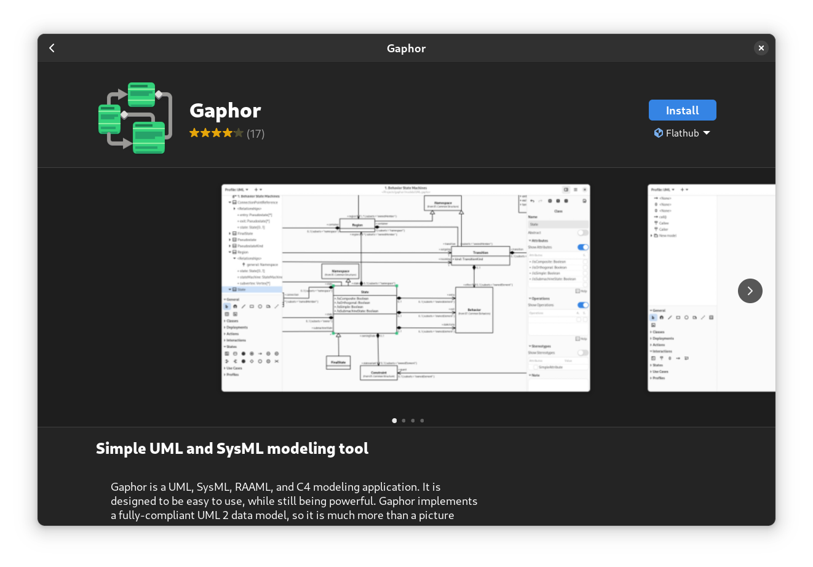

Gaphor¶
Installation¶
Decadent¶
Gnome3, as taken from https://fedoraproject.org/workstation/
$ cat /etc/redhat-release
Fedora release 39 (Thirty Nine)
When I type “gaphor” in the desktop search window, it brings me
Manual¶
$ flatpak install flathub org.gaphor.Gaphor
Looking for matches…
Required runtime for org.gaphor.Gaphor/x86_64/stable (runtime/org.gnome.Platform/x86_64/45) found in remote flathub
Do you want to install it? [Y/n]:
org.gaphor.Gaphor permissions:
ipc fallback-x11 wayland x11 dri
ID Branch Op Remote Download
1. [✓] org.gnome.Platform.Locale 45 i flathub 18.1 kB / 369.6 MB
2. [✓] org.gnome.Platform 45 i flathub 230.6 MB / 375.2 MB
3. [✓] org.gaphor.Gaphor stable i flathub 20.6 MB / 28.1 MB
Installing 3/3… ████████████████████ 100% 3.4 MB/s 00:00
$ flatpak run org.gaphor.Gaphor
Modeling¶
Along with https://docs.gaphor.org/en/latest/first_model.html,
Using Gaphor As A Library¶
Install¶
Gaphor comes with a python library to use. python -m pip install
gaphor fails because development libraries for the underlying
desktop and drawing system are unavailable.
$ sudo dnf install cairo-devel gobject-introspection-devel cairo-gobject-devel
$ python -m pip install gaphor
Sphinx¶
In
conf.py …¶if True: # Gaphor
extensions.append("gaphor.extensions.sphinx")
# the extensions does not regognize .gaphor files which I can then
# refer to by name. bring that information in.
# normally, this should not be a burden because models are cental
# to a project anyway, phycially existing in ``Documentation/``
# once and for all.
gaphor_models = {
"fh_source_sink": './about/site/work-in-progress/playground/gaphor/SourceAndSink.gaphor',
}
Here’s where I get stuck. The diagram:: directive somehow assumes
that we generate right into the source.
.. diagram:: Static
:model: fh_source_sink
File "/usr/lib64/python3.12/pathlib.py", line 682, in relative_to
raise ValueError(f"{str(self)!r} is not in the subpath of {str(other)!r}")
ValueError: '/tmp/jfasch-home/gaphor' is not in the subpath of '/home/jfasch/My-Projects/jfasch-home'
Exception occurred:
File "/usr/lib64/python3.12/pathlib.py", line 682, in relative_to
raise ValueError(f"{str(self)!r} is not in the subpath of {str(other)!r}")
ValueError: '/tmp/jfasch-home/gaphor' is not in the subpath of '/home/jfasch/My-Projects/jfasch-home'
The full traceback has been saved in /tmp/sphinx-err-niho62fg.log, if you want to report the issue to the developers.
Please also report this if it was a user error, so that a better error message can be provided next time.
A bug report can be filed in the tracker at <https://github.com/sphinx-doc/sphinx/issues>. Thanks!
make: *** [Makefile:20: html] Error 2
Jupyter Notebook¶
Put entire notebook here
Us a
jupyter-executehere in this site, containing model code
Links¶
From https://gaphor.org/tutorials …